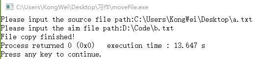
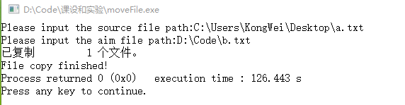

背景
操作系统课程习作。
环境
Windows10 专业版
CodeB::Blocks 13.12
简介
通过查阅资料和上网搜索，总结出下列四种办法，封装为统一输入输出的函数。
- fgetc() and putc()/fputc()
- fgets() and fputs()
- fread() and fwrite()
- system()函数执行DOC命令
标准输入格式
源文件地址要具体到文件名，目标文件可只具体到路径，也可指定文件名。若不指定文件名，则拷贝的文件与源文件同名。如要拷入C盘根目录，需要管理员权限运行。
示例如图：


getc/fgetc() and putc()/fputc()
函数介绍
| 函数名 | 原型 | 功能 | 返回值 |
|---|---|---|---|
| feof | int feof(FILE *fp) | 检查文件是否结束 | 遇到文件结束符返回非零，否则返回0 |
| getc | int getc(FILE *fp) | 从fp所指的文件中读入一个字符 | 返回所得到的字符，若文件结束或出错，返回EOF |
| putc | int putc(int ch, FILE *fp) | 把一个字符ch输出到fp所指的文件中 | 输入的字符ch；若出错，返回EOF |
| fgetc | int fgetc(FILE *fp) | 从fp所指的文件中取得下一个字符 | 返回所得到的字符，若读入出错，返回EOF |
| fputc | int fput(int ch, FILE *fp) | 将字符ch输出到fp所指定订的文件中 | 成功时返回该字符；否则返回EOF |
前一组和后一组的区别在于前一组是宏定义，而后一组定义方法是函数定义，实际使用时没有区别。
实现代码
1 | /** |
fgets() and fputs()
函数介绍
| 函数名 | 原型 | 功能 | 返回值 |
|---|---|---|---|
| fgets | char fgets(char buf, int n, FILE *fp) | 从fp所指定的文件中读取一个长度为(n-1)的字符串，存入起始地址为buf的空间 | 返回地址buf；若遇到文件结束或出错，返回NULL |
| fputs | int fputc(int ch, FILE *fp) | 将str指向的字符串输出到fp所指的文件 | 返回0；若出错返回EOF |
实现代码
1 | /** |
fread() and fwrite()
函数介绍
| 函数名 | 原型 | 功能 | 返回值 |
|---|---|---|---|
| fread | usigned int fread(void pt, usigned int size, unsigned int n, FILE fp) | 从fp所指的文件中读取长度为size的n个数据项，存到pt所指的内存区 | 返回所读数据项个数；若遇文件结束或出错，返回0 |
| fwrite | unsigned int fwrite(const void prt, unsigned int size, unsigned int n, FILE fp) | 把ptr所指向的n*size个字节输出到fp所指向的文件中 | 写到fp文件中的数据项个数 |
代码实现
1 | /** |
本方法因为是按照固定长度的数据块来读，在源文件结束的时候可能会读出一些多余的东西。
system()函数执行DOC命令
函数介绍
| 函数名 | 原型 | 功能 | 返回值 |
|---|---|---|---|
| system | int system(char *command) | 发出一个DOS命令 | (详细介绍)[http://blog.chinaunix.net/uid-24774106-id-3048281.html] |
代码实现
1 | /** |
在格式转换的时候费了一番周折，如我标flag那一行所示，如果直接执行DOC语句，引号内的引号需要转义，而定义好的字符串sysStr由于并没有包含在""之内，所以其中的""、\，并不需要转义。
主函数
从键盘得到源文件地址和目标文件地址，目标文件地址可以带上文件名，也可以不带，后者会创建一个新文件。1
2
3
4
5
6
7
8
9
10
11
12
13int main()
{
char sfp[100],afp[100];
printf("Please input the source file path:");
gets(sfp);
printf("Please input the aim file path:");
gets(afp);
// moveByBin(sfp, afp);
// moveByStr(sfp, afp);
// moveByBlock(sfp, afp);
moveBySys(sfp, afp);
return 0;
}